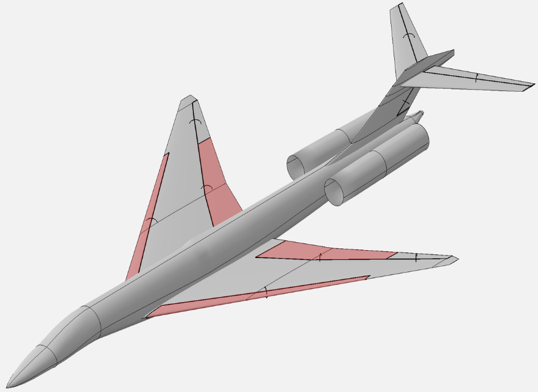
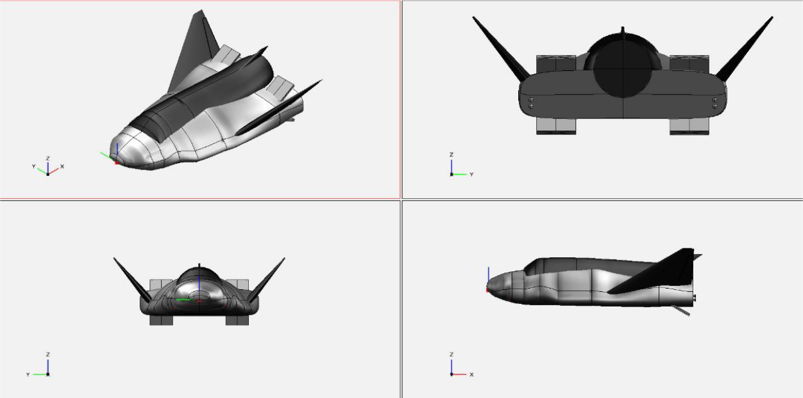
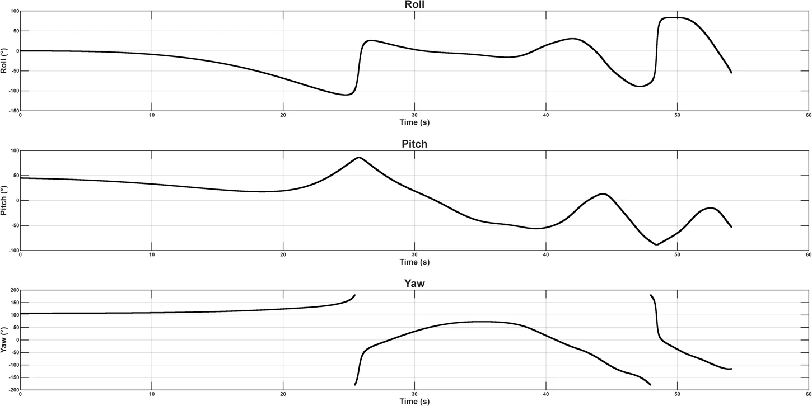
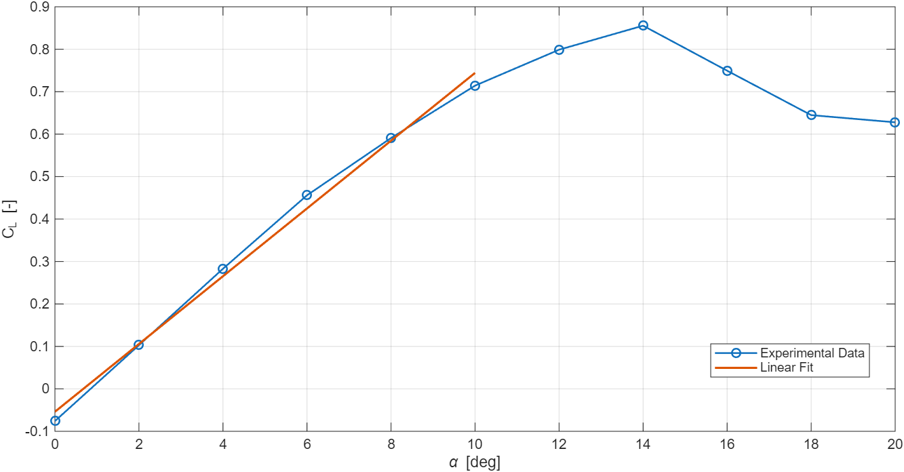
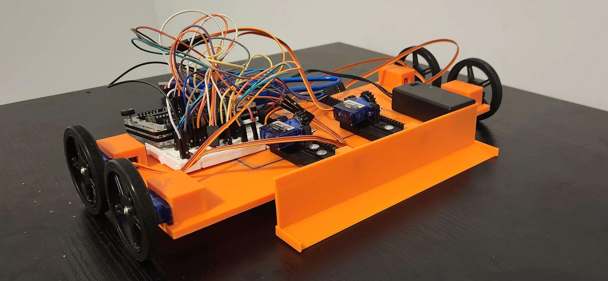
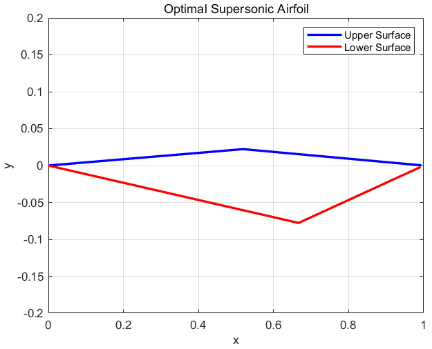

Kronos · Supersonic Citation X
Compared supersonic aircraft configurations and integrated aerodynamic, geometric and mass-property inputs.
Aerospace engineering graduate with a minor in mechanical engineering. Selected work in aircraft design, computational modeling, controls, mechanical systems and experimental validation.
Interactive Aircraft Design Laboratory — a browser-based product connecting editable 3D aircraft geometry with first-order engineering analysis, trade studies and hands-on learning.
Product preview · Educational estimates, not certification data.
Explore by discipline or browse all projects.

Compared supersonic aircraft configurations and integrated aerodynamic, geometric and mass-property inputs.

Conceptual assessment of a reusable lifting-body spacecraft and its coupled control and mass architecture.

Modeled rigid-body flight with quaternion attitude representation.

Compared measured twist of a thin-walled aluminum channel with analytical predictions.

Compared gear ratios, tractive force, launch performance and cruise efficiency.

Reduced airfoil pressure data and studied aerodynamic loads and flow behavior.

Developed parts, assemblies, working drawings and motion studies.

Screened diamond-wedge geometries under lift and pitching-moment constraints.
I'm an aerospace engineering graduate based in Arlington, Texas. I earned my B.S. in Aerospace Engineering with a minor in Mechanical Engineering at the University of Texas at Arlington, after completing an Associate of Science with Honors at Dallas College.
I enjoy working at the intersection of physical systems and computational tools: understanding how something works, building a model, testing assumptions, and turning the results into practical engineering decisions. As Deputy Chief Engineer on two senior design teams, I learned to coordinate across disciplines while leading stability and control work.
Teaching linear algebra as a peer-led workshop leader also shaped how I approach engineering: break complex problems into manageable steps, explain the underlying physics, and check whether the answer makes sense. AeroLab brings together that interest in engineering, software and education in an independent product.
Project results distinguish conceptual estimates, experimental measurements and remaining verification needs.
For engineering opportunities, project questions or private AeroLab demonstrations.